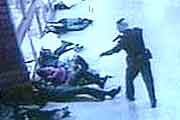

WolfesBlogArchives: November 2003
Friday, November 28, 2003
THE OTHER DAY, BLOGGING ABOUT THE KEY ELEMENT BEING LEFT OUT OF "THE RETURN OF THE KING," I hadn't yet articulated, even to myself, why that missing thing mattered so much ... why there would always be a terrible hole in the story, a sense of incompleteness, because Jackson never filmed those scenes.
Minutes after I posted, Ian Rowan (the Frog Farmer) sent a short commentary he wrote months ago after learning about the missing piece. He nailed the sorrowful problem exactly.
To avoid tossing another spoiler in the face of readers who may not want to know, I put Ian's comments behind the "more" link.
On the Claire Files message boards, Loxosceles_Reclusa has started a thread by making an observation very similar to Ian's. [more]
Posted by Claire @ 10:12 AM CST [Link]
Thursday, November 27, 2003
THIS ISN'T THE SORT OF BLOG WHERE PEOPLE SHARE RECIPES. Okay, recipes for gunpowder, maybe. But not for little sandwiches with the crusts cut off and that sort of thing. But while preparing Thanksgiving dinner this morning, I became so incensed at the surgeon general's comments (see today's other post) that I couldn't resist.
I'm gonna give you one of my very favorite recipes, one of the two or three dishes I'd take to a desert island, an item I make every holiday. Call it Decadent Potato Casserole.
I'm blogging it because it's got carbs up the wahzoo to rattle the Atkins people. It's got fat, fat, fat to upset the advocates of whatever diet we were all supposed to have been on for the last 10 years, before Atkins got respectable. It's got several white items to scare all the folks who think the secret to health and immortality is avoiding white foods. It's got tiny dabs of meat to cause PETA to go non-linear. It hasn't got a single ingredient that any Food Nazi anywhere would approve of. And it's so gourmet delicious you never have to admit to anybody that it contains one of the most ultra-notorious, processed, gauche recipe ingredients of all time: Campbell's cream of chicken soup.
Everybody will absolutely hate this recipe, except the people who eat it. And you -- because it's also incredibly simple to make. You can even make it up the night before and just pop it in the oven when you're ready. Okay, here goes.
[more]Posted by Claire @ 01:35 PM CST [Link]
YOUR MOM'S A TERRORIST! It had to happen. "Obesity" is no longer just an "epidemic." Oh, no! Describing every problem as an epidemic is so day-before-yesterday. No. "Obesity" is now ... [drumroll] ... terrorism.
Yep, the U.S. Surgeon General, Richard Carmona, compares the big O to the big T, calling fat "the terror within" and "every bit as devastating as terrorism." I turned off this morning's NPR interview right there. But I've heard enough. This afternoon, when your mom ladles that second glop of turkey gravy on your mashed potatoes ... when she urges, "Eat, eat! It's good for you!" ... and especially when she puts that second helping of pumpkin pie with whipped cream on your plate ...
Time to call Tom Ridge.
Bring back the TIPS program today. Get that woman "detained." Make sure she never has a lawyer or a moment of freedom again for the rest of her evil existence. Then reflect on the horror of it all -- terrorists not only in our cities and our airports, but right at our own dining room tables. Terrorist moles who've spent their entire lifetimes getting close to us ... just so they could inflict upon us such weapons of mass destruction as candied yams and glazed hams. Shudder. You probably never imagined even Osama bin Laden was capable of such hate, such lifelong treachery and deviousness. My god, why hasn't the government done something about this decades ago? Thank heaven they're finally protecting us from such insideous infiltration.
-----
(Disgruntled though I was that NPR would air such pernicious nonsense on Thanksgiving, I must admit I was extremely impressed to hear such a highly educated man (Carmona has more medical and military letters after his name than there are in the alphabet) deliberately misuse three words -- obesity, epidemic, and terrorism -- in a bare sentence or two. Goebbels was a piker compared with that.)
Posted by Claire @ 11:30 AM CST [Link]
Wednesday, November 26, 2003
RETURN OF THE KING WON'T INCLUDE (Stop here if you don't like spoilers!) ... the scouring of the Shire. I guess all you capital-F Fans already knew that, but I just read it in Newsweek. Damn, damn, damn, damn. That was always one of my favorite parts. It won't even be on the DVD, since Jackson didn't like it and didn't film it. Still, after the collapsing catastrophe of "The Matrix," whatever Jackson does will be no doubt brilliant. Just a few more weeks ...
(And don't muck up the Battle of Pellanor Fields, that's all. And salvage poor Faramir from the thuggish mess you made of him in "The Two Towers.")
Posted by Claire @ 02:50 PM CST [Link]
THINGS TO BE THANKFUL FOR. On this day before Thanksgiving, in this strange old world, there are still things to be thankful for. It's hard to remember the good stuff while ducking the daily assault of RFID news, Ashcroftian evangelism, trolls on the Net, tolls of the dead (Iraqi, American, Palestinian, Israeli, just name your country, ethnic persuasion, or religious flavor), twenty-first century COINTELPRO, counterfeit fed funny money, the eternal war on anybody who wants to have a little fun, and the general wholesale destruction of freedom to save it.
But there it is. Still plenty of room for gratitude left. For starters, I'm grateful ...
- That Hillary Clinton isn't Queen of America, with Bill as her consort
- That we can still laugh out loud at the damnfools who discover secret attacks against them in cartoons (and the damnfools who take the whiners seriously)
- That even some mainstream columnists aren't afraid to call a slave a slave, even while others call that poor slave a taxpayer or a youth in national service
- That the ACLU is on our side on something
- That lots of good folks are conniving to get us into space despite all of NASA's best obstructions
- That Mother Nature makes happy, healthful herbs and that no government on earth, despite treats, brutality, and pompous puffery, can stop her
- That Ashcroft and Bush haven't yet set up tents all across the country to spread their Old Time Religion
- That Ron Paul lives
- That JPFO, Gun Owners of America, and KeepandBearArms.com exist.
- That I can huddle here in bed with my magical laptop computer with its magical broadband connection, even in the middle of nowhere
- That the dog snoozing at my right side hasn't yet eaten the cat snoozing at my left
- That Aaron Zelman, Katherine Albrecht, Larry Pratt, Richard W. Stevens, Debra Ricketts, Jason Sorens, Sunni Maravillosa, The Rocket Scientist, SF, ML Seymour, the Bonsai Man, Jim Bovard, Angel Shamaya, the Impressive Ian, The Llama Man, Eric G., Ken, Elias Alias, Walter Williams, and more astonishing people than I can begin to name still walk free in this world
- That the IRS had its fangs cut back in 1998 and has been thrashing uselessly about ever since
- That Simon Jester lives
- That Orrin Hatch hasn't yet been named Grand Inquisitor
- That Feinstein, Schumer, Bush, Brady, et al. are mortal, just like the rest of us
- That Bill Bennett and Rush Limbaugh provided such great (unintentional) entertainment this year
- That America and the world once had the great gift of Thoreau, Emerson, Paine, Jefferson, Patrick Henry, and Emperor Norton
- That we can still get away with SO much, just because they're too busy to catch us
- That I look out my windows on a world of green and blue beauty
- That dictators do fall and that Oymandias eventually lies in ruins
- That Kevin Tuma, Scott Bieser, Mark Fiore, Baloo, AND RUSSMO! do such great cartoons
- And that you're reading this right now -- because you care and because America's would-be Stalins haven't had their way yet. And won't ever get their way if we prevail.
Have a happy, politically correct, properly diverse, non-culturally stereotyped, appropriately gender-sensitive, nutritionally approved, and legally indemnified Thanksgiving.
Posted by Claire @ 09:35 AM CST [Link]
Tuesday, November 25, 2003
NO WONDER SOME PEOPLE FEAR GUNS -- because they're boiling over with violent hatred and imagine everybody else is as dangerous as they are. Read this letter, whose writer wants Angel Shamaya's whole family (including his baby son and ailing mother) to die slowly and horribly. Then read Angel's reply. Sort of a no-brainer, isn't it, which man's world you'd rather live in?
Posted by Claire @ 03:58 PM CST [Link]
I MET JIM BOVARD IN ACTUAL PERSON THIS MONTH. Our paths crossed during our diverse travels. After Jim debated a friendly statist about the virtues of the Patriot Act (and IMHO crushed said statist into dust), he and I spent a pleasant hour solving all the problems of the world while smoking cheap cigars on a hotel balcony. Well, he smoked a cheap cigar, anyhow. And he insisted it was actually a medium-priced cigar, but you coulda fooled me.
We did, however, solve all the problems of the world. Now, if only we could get somebody besides the snoopy old woman on the adjacent balcony to listen.
I've known Jim via phone and e-mail for a couple of years, but this was the first time I met him in reality. He always struck me as extraordinarily kind, generous, and good humored. I'm delighted to say he's even better in person. Here's the sort of guy he is: After the debate, every time anyone would come up to him to tell him how fabulous he was, he'd immediately introduce me and start singing the praises of my writing, rather than accept praise for himself. I finally had to gulp, "Hey, Jim. This is your book tour. You're here to promote your books, not mine."
If you've ever spent much time around writers, you'll know most of 'em would gladly shove any other writer off a cliff to get a bigger share of ego-stroking. So Jim was not only nice. He was ... well, he was Jim Bovard, and that's a very good thing.
Since he wouldn't ego-boost himself, l guess I'll have to do it.
First, a little introduction, since I hear there are people out there who haven't read every word Jim's ever written. [more]
Posted by Claire @ 09:48 AM CST [Link]
Monday, November 24, 2003
GOOD NEWS FOR THOSE WHO VOTE. The mainstream media is finally paying serious attention to the problems with electronic voting machines. This Sacramento Bee op-ed piece rips the "gee whiz" veil from e-voting and shows in detail what's really behind it: big money, big lobbyists, big power. And (no surprise) no security.
The authors are the Yolo County (CA) clerk/recorder and a law professor at UC Davis. They name names & know what they're talking about.
Posted by Claire @ 10:04 AM CST [Link]
"I DON'T THINK THERE'S A ROCK BIG ENOUGH FOR ME TO CRAWL UNDER to escape that one ..." So wrote Sunni Maravillosa when she sent me prime results from her news trolling this morning. Guess what, America? While the mainstream media was paying no attention, Congress just made your insurance company, your real estate agent, the U.S. Postal Service, travel agencies, casinos, pawn shops, your ISPs, your car dealer -- and any other business whose "cash transactions have a high degree of usefulness in criminal, tax or regulatory matters" -- a "financial institution" as defined by the Patriot Act.
That means the feds can go snooping into any records from those places, merely by writing themselves something called a National Security Letter. They don't have to ask a judge. Don't need any probable cause. Don't need anything. Just write down "it's for the war on terrorism" and they can get any record on anyone. They can scoop up your records in a big sweep while hunting for an actual criminal. Or they can scoop up your records ... well, just because.
The Wired news article on this is well worth reading. It says things I couldn't even repeat without being reduced to raving. And take a look -- just take a look! -- at the six-page document the feds provided under FOIA when EPIC, the ACLU, and library and booksellers' organizations tried to find out how many times these "National Security Letters" had been used.
Posted by Claire @ 09:45 AM CST [Link]
Sunday, November 23, 2003
"SILENCE IS HEALTH." Back in the terrible days when Argentina was ruled by a military junta, a slogan, "Silence is Health," became one of that country's catchphrases. It was "unhealthy" to make noise against the regime. For many, it was even fatal.
Ironically,"Silence is Health" didn't actually have anything to do with politics. As described by Marguerite Feitlowitz in A Lexicon of Terror: Argentina and the Legacies of Torture (and quoted by Aaron Zelman and me in The State vs. the People), it was an innocuous public-safety slogan, used to get drivers to cut down on excess horn honking.
But it resonated. Years later, many people remembered it as part of the junta's oppression. Silence was health. Or at least, it was temporary, momentary, tentative safety.
Now, within the last few weeks, a New Zealand man has been charged with a crime for writing an anti-war letter to the U.S. embassy there. Just this morning, three people sent me various copies of a New York Times story that says the FBI has been investigating anti-war protestors (as terrorists) and asking local authorities to report any troublemakers to the feds' counterterrorism squad. Debra also sent an article that describes how Slovenia (of all places) just prosecuted (as a terrorist) a man who got drunk and sent an e-mail nastygram to President Bush. In this latter case, the dolt did say "you will be killed" (although not, "I will kill you"). Stupid, stupid, stupid -- very. But terrorism? Hardly.
And of course, there is the infamous, secret second no-fly list, which reportedly contains the names of some 1,000 Americans who aren't allowed to travel by air -- solely because they're outspoken politically.
Then I dropped in on The Claire Files message boards to find, in a thread about tax-activist Bob Schultz and the upcoming Give Me Liberty 2004 conference, one of the board members warning, "My source in Washington D.C. told me to warn you that Schultz will be indicted in 2004 and you may not want your names on his list of supporters. It is up to you whether you want to be investigated too!"
So it seems that silence is becoming "health" in America, too, and wherever the power of the American empire reaches. Keep your mouth shut. Don't criticize the regime. Don't read the "wrong" books or magazines. If you're silent and compliant maybe you'll stay off the Busheviks' Stasi-style lists. Maybe you'll be "allowed" to travel. Maybe you won't disappear into a military prison where you won't be allowed even to see a lawyer.
By all means, keep silent, if that's the kind of country you want to have.
Posted by Claire @ 12:44 PM CST [Link]
ON A LIGHTER NOTE ... I got a bug that every woman, at some point in her life, should learn to spin, dye yarn, and knit. It was probably a BS notion about finding one's Inner Goddess or something; I can't remember now. Anyway, last winter I was finally able to take classes in all three skills.
I was a total washout at spinning. (Obviously, my inner self isn't that goddess, whoever she may be.) But I can now announce that -- after $120 in classes, $22 in yarn, $5 for dyes, six months of procrastinating, and 25 hours of miserable, shoulder-hunching, eye-squinting labor, I have produced -- a sock.
I'm so proud. ;-)
At this rate I'll soon match the efficiency and cost-effectiveness of the Pentagon. By next fall, with luck, you can expect the announcement of sock #2. With more luck, sock 2 might actually match sock 1.
Posted by Claire @ 12:18 PM CST [Link]
Friday, November 21, 2003
WELL, IT'S HERE. AND IT'S FREAKIN' SCARY, MY FRIENDS. Applied Digital, those wonderful folks who brought you the Digital Angel and the VeriChip implantable ID device, have just announced a subdermal-implantable payment system, the VeriPay chip. Here's the word from Katherine Albrecht, who founded CASPIAN out of a conviction that this development would happen:
The implantable RFID payment chip I predicted 4 years ago was unveiled to the world today in Paris, France.... The "VeriPay" chip contains a unique ID number associated with the individual in whom it is embedded. This unique ID number can be linked to credit card or other payment method and communicated to merchants by merely holding the chipped body part up to an RFID reader/sales device.Though it is not clear which part of the body the company targets for payment chip implantation, my guess is that the upper arm (where the company's "Verichip" product is currently embedded) would be too cumbersome to wave at a reader device. More likely, the chip will be embedded in an individual's hand or wrist to facilitate the "wave and go" payment system currently possible with the Mobil Speedpass-Timex Wristwatch system.
I swear, in this day of ultra creepy news it's astonishing what a huge percentage of the creepiness comes out of this one company, Applied Digital.
It's also astonishing how little people care about what's going to be done to them ... so terribly and so soon. If Katherine is right about the placement of the chip, however, perhaps this news will at least wake up some of the more literal-minded Christians -- folks who occasionally write to tell me that our current "unique identifying number" shouldn't be feared as the Mark of the Beast because it's not physically branded or imbedded in our wrists or foreheads.
Well, oblivious folks, I hope you'll start fearing that damned beast now. I don't care what rationale you use for fearing it -- biblical, political, science-fictional, or just plain commonsensical. But fear that effing thing. And slay it before it slays all your freedom to move through the world in privacy and under your own free will.
Posted by Claire @ 11:32 PM CST [Link]
Thursday, November 20, 2003
WHEN DID PUBLIC SERVANTS BECOME ORIENTAL POTENTATES? Once, when Thomas Jefferson was vice president, he arrived alone at an inn. He was so scruffy looking, they refused to rent him a room. Even after the assassination of Lincoln, visitors could still walk up and knock on the door of the White House, and a family member would answer.
So at what moment did U.S. officials (especially presidents) become oriental potentates? When did they begin requiring (as GWB did on his London trip this week) the protection of 15,000 police, hundreds of his own bodyguards (paid for by you), the closure of airports and airspace, closures of roads he travels on, and closure of entire downtown districts of major cities for days on end -- so that none of us peons can go about our business as we wish? The only good news about Bush's trip to England is that the British government refused to give special immunity to any of the hundreds of military-armed guards Bush brought with him. Sorry, Uncle Sam, but if one of your goons shoots a bystander by mistake, we'll actually subject him to our standard legal procedures.
Thank heaven there's a shred of sanity left somewhere.
Shouldn't all this offend the average, independent American? What entitles the president to such dramatic (and Draconian) privileges? If security is a concern, let him hire his own bodyguards. If he doesn't feel safe traveling on a commercial jet, let him charter one and travel incognito. If he needs a few extra phones while on the road, let him get cell phones like the rest of us, rather than spending millions to wire up phone systems that will be in place only a week.
Some will say I don't understand security needs in this dangerous world. On the contrary, I think I understand them pretty well. If the U.S. government were behaving itself at home and abroad, and if individual Americans still saw themselves a sovereign (rather than as dependents of an all-powerful state), we and our public servants would be quite secure, thank you. And Bush could buy a plane ticket and hire his own staff like any other good, all-American rich man.
Anyway, all this ostentatious display is less about security than about macho. It's strutting peacocks. It's bulls pawing the ground. It's all about showing who's got the biggest you-know-what.
I know it's unfashionable to protest all this hoorah being made over heads of state. I'm aware that it's become routine to turn entire cities into forbidding military zones just so heads of state -- the poobahs of the moment, who'll be forgotten tomorrow -- can have a few drinks with each other. But damn them; this isn't necessary. And it isn't right. Okay, let third-world state-worshippers who imagine their current dictator is the living incarnation of God play these kinds of games. But the fact that Americans (and our British cousins -- the very folks who wrote the Magna Carta and beheaded a king!) are putting up with this glorification of political gods, and that our media barely reports on it, let alone questions it, is sad, sad, sad.
Posted by Claire @ 09:11 AM CST [Link]
THE SECOND VERMONT REPUBLIC. Is it a harebrained idea? A brilliant one? Or both? Professor Thomas Naylor argues that Vermont must secede from the nation to ensure its own survival.
He sees the U.S. an an empire -- a crumbling empire, after September 11, 2001 -- and observes that such devouring beasties never survive. Of course Naylor's hardly the first to propose secession. But hey, the more the merrier. Hm, and there's New Hampshire right next door, the future State of the Free, ripe to join in a three-state alliance with Vermont and Maine.
(Thanks, Charles!)
Posted by Claire @ 08:45 AM CST [Link]
Wednesday, November 19, 2003
MAUNDERINGS ON LEADERSHIP. I belong to a small (non-political) activist group that operates in two towns. It's supposedly one group, but the members in this town were recruited by a no-nonsense local businesswoman, while the members in that town coalesced around a dedicated, long-time volunteer. That volunteer is hard-working and talented, but to put it technically, he's a complete crosseyed muddle-headed looney-tune who just avoids a padded cell by sheer luck.
The result: The core group in this town is strong on methodical organization, rational thinking, dispassionate judgments, and getting things done in a long-term way. The core group in that town is ... well, a bunch of complete crosseyed muddle-headed looney tunes with drinking problems, religious manias, twisted fantasy lives, and periodic disappearances and freak-outs. Their activities constantly toss on a sea of histrionics and manufactured "emergencies." However, that group also gets more short-term work done than we do because they leap in and "do something" while we're still deciding what actions best fit our long-term plan.
These two groups are going to collide and shatter someday. Everybody knows it. In the meantime we circle each other diplomatically and attempt (not always successfully) to appreciate each others' strengths.
We're a perfect example, in microcosm, of the effects of leadership.
For years, I thought (and hoped) that libertarians didn't need leadership. After all, we're the great believers in individual
[more]
Posted by Claire @ 10:01 AM CST [Link]
GOT GIGGLES AND GRINS FROM MARY LOU SEYMOUR'S LATEST Liberty Action of the Week column. ML gives us sniggles, freeway bloggers, our own libertarian Simon Jester, and other forms of (legal or illegal) tricksterism. I've always loved Simon Jester. But I spent a heap of time this morning exploring Sniggle.net: The Culture Jammer's Encyclopedia.
Tricksiness might not change the world (or then again, it might). But it sure is a good way of taking back a little personal power on those days you feel there's nothing you can do to stop the Tyranny Machine.
Posted by Claire @ 09:07 AM CST [Link]
Tuesday, November 18, 2003
YOU REMEMBER THOSE AIRPORT BODY SCANNERS? The ones that could detect your wallet, gun, medicine bottle, knife, keys, breasts, or penis through your clothes -- but that "didn't violate your privacy" because they didn't require actually patting you? Well, you'll be delighted to learn that those scanners are being improved. Now they "won't violate your privacy" because a computer will replace the naked image of you with a dummy image while still showing everything you're carrying under your clothes.
Whew. We can all feel much, much better now.
Tks. SM.
Posted by Claire @ 09:29 AM CST [Link]
Monday, November 17, 2003
ON THE CLAIRE FILES MESSAGE BOARD, there's been much discussion on defeating various intrusive technologies like RFID. A recent news story about the failure of a voice-recognition system inspires more hope along these lines.
Debra here. Seems that the voice recognition system installed by the Shreveport, LA Sherriff's department is having trouble recognizing those sweet-as-smoked-honey southern drawls.
The voice-recognition system asked people to name the person or department they wanted. More often than not, the system just didn't understand, and they wound up at the wrong place, said Capt. John Dunn, who oversees police communications.
Granted this isn't a voice identification system, but combined with the spectacular failure of Snooper-Bowl XXXV, you gotta wonder just how accurate those "foolproof" biometrics really are.
Posted by Debra @ 01:41 PM CST [Link]
A FEW DAYS AGO I MENTIONED A NEW BILL TO EXPAND FBI POWERS to snoop into our financial lives. In more news of the weird, Norm Singleton, legislative director to the only constitutionalist congressman, Ron Paul, wrote to Declan McCullagh's PoliTech list to say, "Most members did not read this bill because the details are 'classified' and only one copy is available for members to go to a certain room and sit there and read it!"
'Classified' legislation? I sure hope that's just a bitter phrase to describe the now-common policy of keeping bills as unavailable as possible before final votes. Bad enough we have "classified" presidential directives.
Future scenario:
"Up against the wall, scumbag! You're under arrest!"
"Wha'd I do? Wha'd I do?!"
"It's classified, dirtball! One more question like that, and we'll toss in a half dozen espionage charges, too!"
Nah. Not yet, anyway.
Posted by Claire @ 12:30 PM CST [Link]
Sunday, November 16, 2003
OH NO! HARDYVILLE GOT A RED-LIGHT CAMERA. I'm so ashamed to admit it. And damn, I especially hate to bring bad news with my very first brand-new Hardyville story.
But it is just possible the tale has a happy ending. Find out for yourself in the new column just posted at Backwoods Home magazine.
Posted by Claire @ 01:56 PM CST [Link]
A LITTLE CATCHING UP WITH NEWS ON A RAINY SUNDAY ...
The Ninth Circuit Court -- in something of a departure for itself and for federal courts in general -- has ruled that there's actually something in the world that isn't covered by the Constitution's interstate commerce clause. And (good news for us) that something is homemade machine guns.
This week's privacy villain is the LAPD's "Tabloid Cop". He was using a police database to get dirt on celebrities (which he sold to sleaze zines) and using the same databases to stalk his own ex-girlfriend. This sort of "fun" by cops is becoming so common that the only "news" is that it took three years to discipline him. But don't worry; he got a vewwy hard swap on his widdle wist when finally held to account. (BTW, my friend the 911 operator admits that all the dispatchers snoop through the databases routinely whenever things are slow.)
Heartwarming news. The widow who lost her million-dollar farm after missing a single $500-something tax payment last year got it back. The buyer, a real estate investor who paid only $15,000 for this valuable property, never considered keeping the place once he learned the circumstances. A rare show of integrity. That old lady was very, very, very lucky. What the hell is any government doing, confiscating a property because of a $500 missed payment? If you think you own your land, think otherwise. You merely rent it from the government and can be evicted for a simple goof.
News of the Weird (and perhaps the most cogent commentary yet on the sorry state of modern art): In Budapest, students and workmen were admiring the sculpture of a hanging man in a newly re-opened campus building. Then somebody realized it really was a hanging man. Urg. This is straight out of a really, really bad 1950s horror film, Bucket of Blood, in which a beatnik loser wannabe artist finally gets a hot art reputation by coating stiffs with clay. (And then one of them ... starts dripping ...)
Atek3 & Rick find the most interesting (and sometimes the strangest) items.
Posted by Claire @ 10:38 AM CST [Link]
Friday, November 14, 2003
IF YOU WERE IMPRESSED YESTERDAY BY LITTLE SHAWNA FAYE, take a look at the quote that tops Carl Bussjaeger's North American Samizdat. Now there's an outstanding example of decades of combined media-government indoctrination.
Posted by Claire @ 08:56 AM CST [Link]
NATIONAL AMMO WEEK begins tomorrow. The official National Ammo Day is this coming Wednesday, November 19. That's the time of nationwide BUYcott, when gun owners can show the strength of their numbers (and their determination) by emptying the ammo shelves of gun stores, hardware stores, and sporting-goods shops.
This is the idea of Kim du Toit, whose goal in life is "Turning America back into a nation of riflemen, one person at a time."
(Tks, Misfit.)
Posted by Claire @ 08:50 AM CST [Link]
Thursday, November 13, 2003
SPEECHLESS.
"In Government class we are having a debate on Gun Control... My question to you all is, what is your feelings towards gun control... and why do you feel this way?!"
It's probably too late to respond to little ShawnaFaye, who posted this lovely, well-punctuated, highly grammatical, correctly capitalized query on the Net more than a month ago. Pity. The young lady appears to be a shining example of government schooling. I'm sure our feeeeeeeelings about gun control would have appealed to her intellect. Ah, yes. After posting the above, she also revealed her own feeeeeelings about gun control in a followup message. And I'll bet you just can't begin to guess how this product of the state propaganda camps feeeeeeels about guns.
Rick, where do you find this stuff, anyway???
Posted by Claire @ 12:54 PM CST [Link]
GORE (VIDAL) ON BUSH.. Never imagined, way back when, that this bitchy old liberal would emerge as such an acute observer and gutsy commentator.
Posted by Claire @ 08:30 AM CST [Link]
FORGET THE LIBERTARIAN PARTY. Forget the Rs and the Ds (if you haven't already). Forget the Greens, the Reform Party, the Constitution Party, Natural Law Party, and whatever other parties proliferate throughout the population.
Randall-the-Dreamer sends word of the first and only political party to make any real sense.
(The only thing wrong with these people is their self-defense link. No, guys, the real political self defense link isn't nra.org. Get serious now. It's http://www.gunowners.org.)
Posted by Claire @ 07:15 AM CST [Link]
THE ASHCROFT MACHINE KEEPS ROLLING ON:
A little-noticed measure approved by both the House and Senate would significantly expand the F.B.I.'s power to demand financial records, without a judge's approval, from car dealers, travel agents, pawnbrokers and many other businesses, officials said on Tuesday. ...The measure now awaiting final approval in Congress would significantly broaden the law to include securities dealers, currency exchanges, car dealers, travel agencies, post offices, casinos, pawnbrokers and any other institution doing cash transactions with "a high degree of usefulness in criminal, tax or regulatory matters."
They're talking about access without a court order. Just an "administrative subpoena." In other words, "This piece of paper we gave ourselves says we can have whaterver we demand. Hand it over or we'll hurt you."
Posted by Claire @ 07:07 AM CST [Link]
Wednesday, November 12, 2003
THE BAD NEWS IS IT'S BECOMING POSSIBLE TO "READ" THE BRAIN. The good news is it could have awesome benefits for disabled people. (I worry about the rest of us, though. Maybe those tinfoil hats aren't such a goofy idea, after all.)
Posted by Claire @ 09:40 AM CST [Link]
I LOVE YOU, NAT HENTOFF. The great Hentoff powerfully launches a series of columns on Terri Schindler (Schiavo).
Yesterday, after the "life for Terri" banner went up on the blog, some folks started a discussion about her case at The Claire Files message boards,. So far, it appears most of the posters disagree with me. If this were an ordinary "right to die" case, I would disagree with me. But this case is quite a different animal, and Hentoff tells that far, far better than I ever could.
Posted by Claire @ 09:17 AM CST [Link]
Tuesday, November 11, 2003
WHY THE TERRI SCHINDLER BANNER? I believe in "the right to die" -- as long as that means the individual, not the state or some creepy Hitlerian "bio-ethicist," makes the choice. If I were as damanged as Terri Schindler (Schiavo) is, I would not want to live.
Given that, it feels strange to post a "pro-life for Terri" banner at the top of this blog, as Debra did today. There are two reasons it's up there. First, there's a ton of evidence that Terri's "wish" to die is something concocted by her husband -- a man who has judicially raided the trust fund set up for her care, denied her the therapy he promised to provide, and who appears to want her dead only so he can inherit the rest of the money. Second, the media propaganda about Terri's "persistant vegetative state" is appalling. As horrifically brain-damaged as she is, this is a responsive human being -- not merely a "houseplant" (as her husband's lawyer called her) that responds randomly to stimuli.
Every time I hear or read a mainstream media report on her case, I cringe in revulsion. They never even question the "persistant vegetative" claim (or mention that some doctors have questioned it). The media presents the case as a he said/she said between Terri's parents and her husband, rarely mentioning the husband's uber-sinister actions, and not even acknowledging the obvious conflict of interest in the fact that he stands to profit from Terri's death. Have these reporters truly not looked into this case? Or -- shudder! -- are their stories deliberate propaganda for the position that "useless" human beings should be disposed of?
Posted by Claire @ 02:58 PM CST [Link]
FOR THE SECOND TIME THIS YEAR, WAL-MART HAS BEEN CAUGHT USING CUSTOMERS AS GUINEA PIGS. The first time, Wal-Mart teamed up with Gillette to secretly photograph customers buying razor blades.This time, the co-conspirator was Procter & Gamble, whose unethical, voyeuristic "researchers" spied on Oklahoma Wal-Mart customers from 750 miles away.
Several people sent this news, but Karen de Coster forwarded a version in which the creepy Wal-Mart story was a sidebar to a longer one that presents both the "gee-whiz, isn't this great!" picture and privacy concerns. Worth a read (for the very few who seem to care that they're about to be tagged into 1984).
I don't drink, smoke, have high-risk sex, or vote. My only serious vice is caffeine -- and even that I take in the wussy form of a nice cup of hot tea. But I admit to a secret Wal-Mart addiction. I can't get enough of the place. If they keep up this crap of cynically using their customers as lab rats, though, I'm going to take those every-two month country-mouse-in-the-big-city spending binges elsewhere.
Posted by Claire @ 02:37 PM CST [Link]
HMM. IF YOU WOULDN'T DO IT TO A DOG, THEN ...?
Posted by Claire @ 08:41 AM CST [Link]
Monday, November 10, 2003
WELCOME TO THE MEATRIX. This clever Flash animation has been making its way around the left side of the Net. But it is (pardon the expression) food for thought for anyone who fears that factory farming is inhumane, unhealthy, or destructive to human communities. Heed the words of "Moo-pheus."
After the two-minute animation runs, you can click to get a list of family farms and restaurants and stores that sell non-factory meat and dairy products.
Posted by Claire @ 09:04 AM CST [Link]

JUST WHEN YOU THINK THE DRUG WAR CAN'T REACH ANOTHER NEW LOW, police in South Carolina barge into a school, forcing innocent students to cower on the ground at gunpoint while police dogs sniff and snarl. (And as usual ... "no drugs were found.")
Posted by Claire @ 08:59 AM CST [Link]
Sunday, November 9, 2003
ROY LUCAS, VIP CONSULTING ATTORNEY ON SILVEIRA V. LOCKYER IS DEAD. The mainstream media eulogized him as the legal theorist behind Roe v. Wade. But at the end of his life, he was working on the most sweeping case ever in support of the Second Amendment. He died of a heart attack on November 3 while visiting Europe.
This might be a good time to pledge renewed support to KeepandBearArms.com for its efforts to get Silveira v. Lockyer before the Supreme Court.
(NOTE: When I originally posted this entry, I called Lucas the lead atty. Wrong. That's Gary Gorski, who was very gracious in not making an issue of it. Lucas was vital to the case, helping craft and prepare arguments for the Supreme Court, with which he had both experience and expertise.)
Posted by Claire @ 07:03 PM CST [Link]
ANARCHOBABES AND LIBERTYCHIX! Whoo hoo! There's a new blog in town and it looks like a hot one. Anybody who's been complaining that there aren't enough women in the freedom movement should head over and check out The AnarchoBabes. aka Free Heart, Dakota, and Rebel with a Clue. These three 20-something (or maybe early 30-something) women have about a batallion's worth of female energy between them.
Their anarcho-blog is brand new, with barely a week of entries. Free Heart, whoever this young spirit may be, alerted me to it this morning via e-mail (and Free Heart, you really didn't have to fawn that much; I'd have hopped on it, anyway). Normally, I'd say wait and see what develops. But their world of guns, sex, babies (in Free Heart's case), alternative relationships, and capital-A Attitude is already pretty out there.
The babes talk back and forth with each other while also putting hardcore freedom content into their messages. You might have to read multiple posts from the bottom of the blog upward to follow the conversation. You'll probably be entertained -- and if you're of a conservative, traditional-family bent, you might also be a little shocked by these highly uninhibited "grrlz."
Posted by Claire @ 01:35 PM CST [Link]
GREAT NEWS THAT HOWARD DEAN WON'T TAKE MATCHING CAMPAIGN FUNDS. He joins Bush in that decision and becomes the first Dem ever to refuse that particular tax-tit.
Of course it's a strategic decision, not a principled one. But I did like that the Washington Post said the decision may "doom" the matching-funds law. (The NYTimes more realistically said the law would need an "overhaul" -- which probably means it'll get worse. But let's take our good news where we can.)
Howard Dean looks more interesting all the time. He may just be another Tweedledee or -dum. But at least he's more entertaining than the old familiar Bush-Kerry-Lieberman-Clark gang.
Posted by Claire @ 01:18 PM CST [Link]
Friday, November 7, 2003
THE BRAIN'S CAPACITY FOR SELF-DELUSION IS AWESOME. I'm thinking today not of the big brain delusions like "God ordered me to slay all of the [insert unpopular minority group] to the last woman and child!" or "Government is my friend." Just the little everyday, go along to get along illusions.
I was fitted earlier this week with contact lenses. The type of prescription is new to me (though I guess it's been around a while) and it's very, very weird. Called "mono-correction," it involves putting a distance-vision lens in one eye and a close-up vision lens in the other. So out of one eye I can see into infinity, but can't make out the lines in my own hand. Out of the other eye, I can read a book or a computer screen, but everything beyond two feet gradually blurs into fuzz.
If you've ever had one lens fall out of your glasses and tried to function that way for a while, you'll know the feeling -- disorienting, slightly dizzying, and damned annoying. You can see what you need to, but you also see a big, vague blob smack in the middle of everything you look at. You feel as if you're going to walk in circles or slam into a wall if you don't watch yourself.
Nevertheless everybody at the eye doctor's office assured me that if I'd just tough it out, somewhere between 20 minutes and six weeks after getting the lenses, the chances were very good that my brain would change its mind and I'd see perfectly.
Hard to believe. I'm still staggering around feeling crosseyed, mostly. But about 24 hours after getting the lenses, and again this morning, the world did indeed clear briefly. For an hour, even two hours, there was no big fuzzy blob. I could see flawlessly. Then good, common sense reasserted itself and the brain said, "Damnit, Claire, there is too a big, blurry blob there. Lissen to me; I'm tellin' you the truth!" And lo and behold, the blob was there again.
They tell me that's the way it works, coming and going until the brain just ... gets it. Or gives up and quits fighting.
It reminds me of the "Somebody Else's Problem" field Douglas Adams wrote about so hysterically in the Hitchhiker's Guide series. It's there, but it's not there. You see it if you look at it side-wise, but it's invisible straight on. I wonder if all this is related to the "field" that lets old husbands view old wives as the young beauties they first met. Or the field that enables parents to imagine their homely infants are the most perfect creatures ever born. Or the field that lets us edit winos out of our pleasurable downtown experiences. Or the field that enables millions not even to perceive people on the political fringe, or the one that lets presidents believe only their conniving advisors when the rest of the world is trying to shout the truth.
Well, that might be reading a bit much into a pair of contact lenses. But the brain is indeed a tricksy critter, and if it can tell you you've got 20/20 vision when what you've really got is some crosseyed hybrid in which each eye is "doing its own thing" and neither eye is willing to work with the other, there's really no telling what else it might be doing while we're not paying attention.
Posted by Claire @ 02:35 PM CST [Link]
I FINALLY FOUND AN HONEST LEFT-WING ORGANIZATION. Debra here, and I'm delighted to report that left-wingers have formed a wonderful new organization called People for the Correct Way. I'll be sending in my dues tomorrow. [more]
Posted by Debra @ 11:28 AM CST [Link]
Thursday, November 6, 2003
GUESS WHICH ONE GETS CHARGED WITH A CRIME? Eighty-something man returns from cashing social security check. Mugger gets on elevator with him & robs him. Man fights mugger off with a .38. Guess which one gets charged with a crime ?
Read the comment from the neighbor. Eagle-Eye Bob, who found this story, reminds us that when obedience to authority becomes more important to "society" than preservation of life we've reached the beginning of the end.
Given the values of a police state, which is more important, do you suppose? Keeping the 80-year-old "gun criminals" off the street or the nine-year-old "toy gun criminals"? Such a dilemma for the all-powerful superState.
Posted by Claire @ 01:20 PM CST [Link]
PSY-OPS OR REAL THREAT? Al Quaeda warns Muslims to leave major U.S. cities immediately. The cities are NYC, DC, and LA. The Department of Homeland Security still has us at yellow alert.
Posted by Claire @ 12:35 PM CST [Link]
IS IT ME? OR HAS THE FREE STATE PROJECT CUT BACK ON RECRUITING since the October 1 announcement of the target state? The president's message in the November issue of the porcupines' Quill newsletter announces a change of strategy focused on immediate (apparently political and legislative) action in New Hampshire.
There's not a mention of organized recruiting efforts. There's not a hint the FSP plans to capitalize on its recent, priceless media exposure with a focused PR or advertising campaign. The only recruiting message is "Hey, everybody, tell your friends about the FSP." (Which porcupines have been vigorously doing for two years, anyway.)
Huh? Recruiting the 20,000 and managing the mass migration is the only mission of the FSP. Political action (or non-political action) is the job of individuals once they get there. The whole concept is that effective action requires that critical mass of freedom lovers. If you don't have that, you don't have enough to make deep, broad, permanent change.
From the FSP's own FAQ:
The goals of the Free State Project as an organization can be accomplished without the election of any candidates or the passage of any legislation: the Free State Project's purpose is simply to get 20,000 classical liberals and libertarians into a single state of the U.S. What happens next is up to those 20,000.The FSP, in its simplicity and single-minded focus, is the greatest project libertarians have ever conceived and -- almost -- achieved. To weaken recruitment and turn the FSP into a PAC or the tool of a PAC would be premature at best. At worst it would, quite simply, guarantee the failure of the project.
Say it ain't so, guys! Say it ain't so! I'm ready to keep my promise to the FSP, to move when the critical mass is gathered. But is the FSP ready to keep its promise to the thousands of people like me? Or is it doomed to become just another hopeless, typical libertarian dream in which someone's off-target "bright idea" supercedes and destroys the long-term plan?
Please say it ain't so.
Posted by Claire @ 08:02 AM CST [Link]
Wednesday, November 5, 2003
REMEMBER HARLEY "BILL" WALKER, the Tennessee man who got a traffic ticket for flashing his headlights in a neighborly gesture to warn other motorists of a speed trap? He was charged with interfering with the duties of a police officer.
Well, it cost him $1,000 to fight the $75 ticket, but the feisty old guy just won his case. A judge ruled that Walker has a good old all American free speech right to flash his headlights.
I heard Walker interviewed on NPR tonight, and he sounds like one heck of a guy, fully aware that a little thing like this citation is part of an overall erosion of liberty. You go, Harley!
Posted by Claire @ 07:16 PM CST [Link]
BETWEEN THE BRITISH PRESS AND THE ONION WE GET ALL THE REAL NEWS.
Americans Demand Increased Governmental Protection from Selves. Searcher posted this to the Claire Files message boards, not knowing whether to laugh or cry. You got that right, Searcher.
Posted by Claire @ 10:33 AM CST [Link]
OF COURSE IT HAD TO COME FROM THE BBC. "US raises spectre of conscription":
The American defence department has begun a recruitment drive for local draft boards, raising questions about a possible revival of conscription. ...Pentagon officials have denied any move to re-instate the draft, saying that this would require a conflict of the magnitude of World War II.
They say the Selective Service System (SSS), which runs the draft boards, is merely launching a routine recruitment drive as 80% of places are now vacant. ...
The SSS's notice, posted on the department's Defend America website, says that in the event of a military draft approximately 2,000 five-member local boards will be called upon to decide which young men are eligible for deferments, postponements or exemption from military service.
Never have quite understood why anybody needs draft registration or draft boards if they're so adamant they're not going to have a draft.
(Tks FMN)
Posted by Claire @ 09:46 AM CST [Link]
Tuesday, November 4, 2003
"THE LAW IN HARDYVILLE." I forgot to blog it over the weekend when it first went up. But Backwoods Home magazine has now posted one of my all-time favorite columns, "The Law in Hardyville." This is the second and last of the "classic" columns to re-introduce my little mid-nowhere town of Hardyville before an all-new series runs, starting November 15.
When Hardyville appeared on WorldNetDaily.com back in 1998 and 1999, columns about firearms always drew the most (and most enthusiastic) mail. But "The Law in Hardyville" came in next. I still giggle at it myself. The details of the "law" were concocted on a long road trip with Charles "I-Am-Not-a-Lawyer" Curley.
Posted by Claire @ 01:49 PM CST [Link]
POLITE NON-COOPERATION WITH THE POLICE. This isn't new info, but it helps to remind ourselves every so often: We don't have to cooperate with much of what the police ask us to do. Gary Marbut of the Montana Shooting Sports Association sent this particularly good little summary of what you're not required to do and how best to refuse.
Bottom line:
Most important: Remember that the justice system is never more lienient on you when you give up your rights. Confessing or cooperating will only make things harder on you. When you give up your rights, you also give up any hope of being treated fairly. Always be polite and courteous, but never cave in and waive your rights. EVER.Posted by Claire @ 12:19 PM CST [Link]
Monday, November 3, 2003
THERE WERE JUST FIVE SENATORS PRESENT TONIGHT to vote for final passage of Bush's $87 billion for Iraq. They had arranged in advance to pass the bill by a voice vote so that no individual senator could be held accountable.
This is also, if you remember, the way the Brady bill was inflicted upon us.
"This is the way the world ends.
This is the way the world ends.
This is the way the world ends.
Not with a bang, but a whimper."
Posted by Claire @ 07:37 PM CST [Link]
RICHARD POE'S THE SEVEN MYTHS OF GUN CONTROL came out in paperback recently. I missed the hardback, partly because I assumed that Poe, whom I identify with conservative sites like FrontPageMag and NewsMax, would make wussy arguments.
I'm also so OD'd on gun politics that I couldn't imagine anybody having anything new to say.
I was wrong! And I owe Poe an apology for imagining any degree of wussitude.
Poe simply demolishes the seven named myths in clear, vivid language that could reach even your anti-gun Aunt Maud. Since these myths are the most common ones promoted by the disarm-us crowd ("guns increase violent crime," "the Second Amendment is obsolete," "we should license guns the same way we license cars," etc.), the book is especially effective.
The best thing about it, though, is its very long epilogue. You get 2/3 of the way through the book and here it is -- an extended essay called "The End of Manhood." What? I thought when I came to it, Has Poe slipped a cog? After demolishing the gun controllers' favorite myths, is he going to hand them a victory on the 'guns=macho' issue? As I began to read, I also suspected he might be pulling off a 'traditional family values' argument (a real groaner for anybody who still suffers the aftereffects of one of those allegedly "healthy" traditional upbringings).
But I should have figured by then that I could trust him. What he delivers in "The End of Manhood" is an eloquent essay on how the recent attempt to feminize boys -- to drug or socialize all the competitiveness and anger out of them -- actually leads to Columbine-style outbursts of violence (among other consequences). There were moments I wasn't sure this essay belonged in this book. But it's so good in its own right I'd be moved and persuaded by it wherever it appeared.
Read this book. It's worth it.
Posted by Claire @ 09:29 AM CST [Link]
I THOUGHT IT WAS A JOKE WHEN RICK FIRST SENT THE URL. I read and read, waiting for the punch line, waiting for some sign that this thing was concocted by The Onion rather than a real military equipment manufacturer. But nope. Apparently The Corner Shot, is for real.
A gun that allows them to shoot around corners at us. It would be a real hoot to have one. But sorry. Not sold to us peasants. Only the black-suited ninja guys.
Posted by Claire @ 08:50 AM CST [Link]
Saturday, November 1, 2003
PANDERING TO THE NRA. That's what presidential candidate John Kerry accused Howard Dean of doing when Dean said he'd like to be the candidate to lure a broad spectrum of voters -- including "white men with Confederate flags on their pickup trucks" -- back to the Dem party.
Blah, blah, blah. Anyone mentioning "Confederate flag" is racist. And since all those guys with Confederate flags also have rifle racks, it's "pandering to the NRA." Like these people are so out of touch they don't know the NRA's not the only game in town. On that level, it's all boring. And one more diversion from the real issues.
But when I read that "pandering" line, my little brain flashed to a wonderful comeback. What if, someday, there was a mainstream candidate gutsy enough to say: "Pandering to the NRA? Hell no! I wouldn't pander to those wimps. I'm pandering to Gun Owners of America, Jews for the Preservation of Firearms Ownership, and KeepandBearArms.com!"
Wouldn't you love it? In some other lifetime, perhaps ...